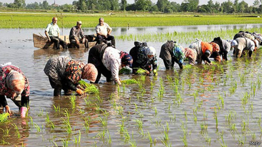

|
|
زنان شالیکار برنج میکارند، درد درو میکنند
شنبه5 مرداد 1392
بی بی سی: زنان شمال ایران سالهای سال است که در کاشت برنج در شالیزارها و درو کردن آن نقش اصلی را دارند. زنانی که برنج میکارند اما به دلایل مشکلات این کار عموما به انواع بیماریها مبتلا میشوند و حاصل آنها از این کاشت، درد است.

زهرا از جمله زنانی است که سالهای جوانیاش در شالیزار گذشته و حالا در میانسالی به آرتروز شدید و دردهای مفصلی مبتلا است و راه رفتن بدون عصا برایش بسیار سخت است. او هنوز هم به شالیزارها سر میزند و برای زنان و مردان شالیکار نان و پنیر میبرد، او دیگر توانایی کار کردن بر زمینش را ندارد و دخترانش نیز علاقهای به این کار ندارند، اما زنان روستا زمین او را میکارند و درو میکنند.
زهرا میگوید: "برای کاشت برنج از صبح زود سر زمین میرفتیم، مردان زمینها را کرت بندی کرده بودند و ما نشاها رو توی گل فرو میکردیم، ۴ ساعت دولا بودیم و بعد برای یک چای و نان و پنیر کنار زمین میآمدیم، دوباره کار را شروع میکردیم و تا ناهار و بعدش هم دوباره تا عصر حدود ۷ شب. بعد به سمت خانه میرفتیم و کارهای خانه تازه شروع میشد. اما بعد از چند سال یک روز تب شدیدی کردم و درد زیادی که توان حرکت رو از من گرفت، وقتی به دکتر مراجعه کردم، گفت تمام این دردها به خاطر کار کردن در شالیزاره و هیچ درمانی نیست و برای دردهام مسکن تجویز شد."
ابراهیم قربان نژاد، مسئول برنج جهاد کشاورزی استان مازندران با اشاره به اینکه زنان بیشترین نیروی کار در شالیزارها هستند، در خردادماه سالجاری به روزنامه کلیک خراسان گفته "زنان شمالی بیش از ۷۵درصد نیروی کار شالیزارها را تشکیل میدهند که دستمزد پایینتر، دقت و سرعت عمل بیشتر از دلایل رغبت مالکان به نیروی کار زنان است."
استان گیلان نیز با ۲۳۸ هزار هکتار سطح زیرکشت برنج حدود ۳۷ درصد سطح زیرکشت را به خود اختصاص داده که از این میزان حدود ۷۵۰ هزار تن برنج سفید تولید میکند. آمار زنان شالیکار در این استان نیز بیش از مردان است.
تماس مستقیم با آبهای آلوده در شالیزاها که با انواع کود شیمیایی و سم آغشته شده، سلامت زنان شمالی را همیشه تهدید میکند. بیماریهای قارچی، دردهای مفصلی و روماتیسم و سرطان از عمده بیماریهایی است که این زنان شالیزار با آن دست و پنجه نرم میکنند.
از دیگر بیماریهایی که شالیکاران به آن مبتلا میشوند، بیماری تب شالیزار است، طبق آمار سالانه بیش از ۲۰۰ نفر در کشور به بیماری تب شالیزار مبتلا می شوند که درصد بالایی ازآنها را شالیکاران و کشاورزان مناطق شمالی تشکیل می دهند.
این بیماری از دسته بیماریهای مشترک انسان و دام است. عامل بیماری از طریق مخاط (چشم، مخاط دهان) و پوست آسیب دیده وارد بدن شده و از طریق خون به ارگانهایی که معمولا سیستم اعصاب مرکزی، کبد و کلیهها است رفته و تکثیر میشود.
محمدرضا شیرزادی، رییس اداره مبارزه با بیماریهای قابل انتقال بین انسان و حیوان وزارت بهداشت در اوایل فصل کاشت برنج (خردادماه) به خبرگزاری فارس گفته که بهترین راه برای جلوگیری از ابتلا به بیماریهااستفاده از دستکش و چکمههای بلند در شالیزار است. کلیک کارشناسان بهداشتی نیز به کشاورزان و دامداران توصیه کردند که با پای برهنه در آب آلوده مزارع نروند.
اما زنان شالیکار میگویند: "با دستکش و چکمه در شالیزار نمیشود کار کرد، با دستکش ساقه در گل جا نمیرود، چکمه به نشا آسیب میزند، راهی نداریم، باید با این شرایط کار کنیم."
زنان شالیزار با همه سختی که در کار دارند، لبخند از لبشان نمیرود. سمیه یکی از این زنان است، او میگوید: "کار مگر آسان هم هست، کار کار است، موقع کار باید خندید، ما موقع کار آواز میخونیم، شوخی میکنیم، حتی وقتی مردها نیستن، می رقصیم. از قدیم هم همین بوده، مادرهای ما هم همینطور بودن."
سرپرست سازمان جهاد کشاورزی گیلان در ابتدای فصل کاشت به خبرگزاری فارس گفت ۱۵۰ هزار هکتار از ۲۳۴ هزار هکتار اراضی شالیزارهای این استان مستعد کشت مکانیزه است اما شالیکاران میگویند: "اگر قرار باشد زمینها مکانیزه شود، ما از نان خوردن میافتیم، یک سری از ما صاحب زمین نیستند و با کار کردن بر زمین دیگران امرار معاش میکنند، آن عدهای هم که زمین از آن خودشان هست، هزار مشکل دارند، به جای اینکه راهی برای بیمه و خدمات پزشکی پیدا کنند، ما را از نان خوردن میاندازند."
رعنا، یکی دیگر از شالیکاران شمال که سالها است بر زمین اهالی برنج میکارد و درو میکند میگوید: "دیگر دخترانم حاضر نیستند برنج بکارند، آنها ترجیح میدهند کار اداری داشته باشند، البته در حال حاضر کار ندارند اما باز هم حاضر به کار بر زمین نیستند، در حالیکه من از وقتی ۱۵ ساله بودم، با مادرم بر زمین کار میکردم، ناخنهای دستم بر اثر کار از بین رفته و انگشتهایم تغییر شکل داده، آنقدر در زمین کار کردهام که دیگر نمیتوانم راست بایستم، اما این کار من است."